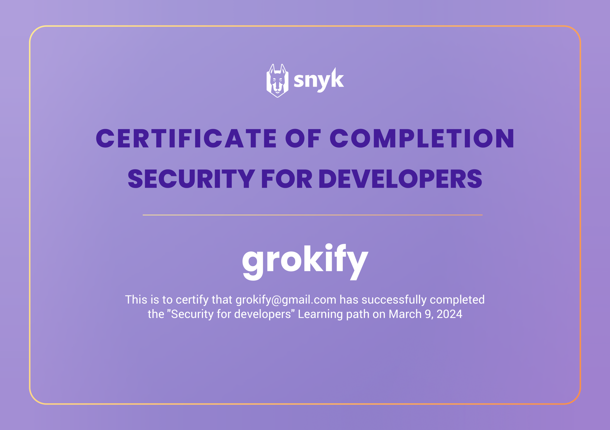
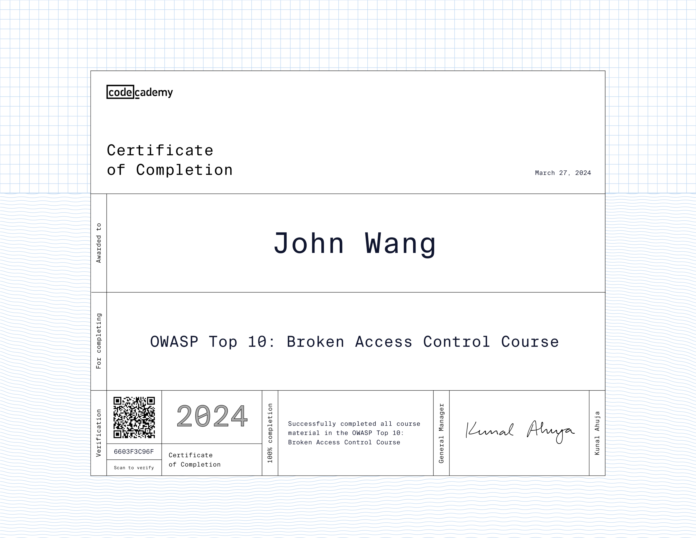
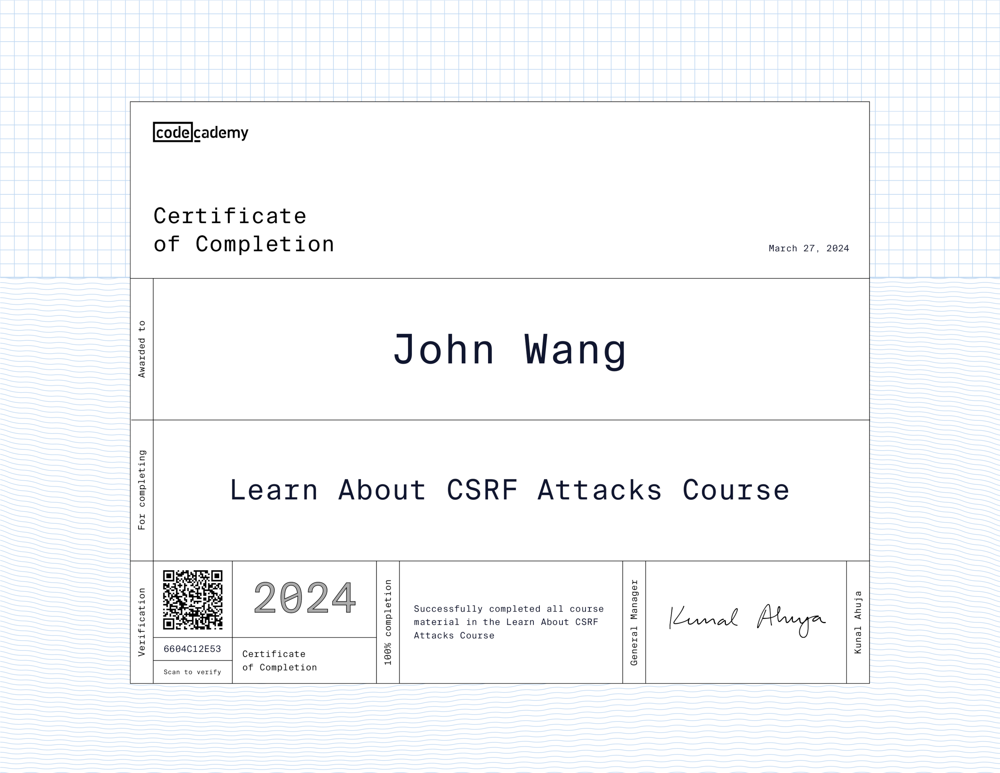
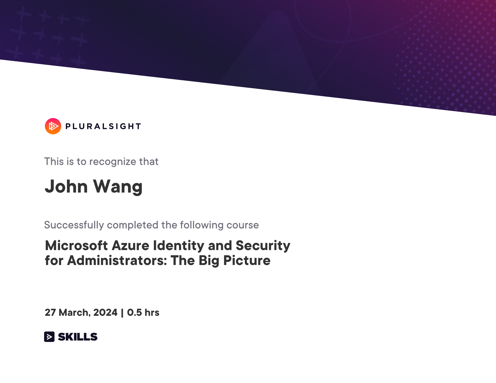

John's Security Certificates
- Programming
- OAuth 2.0 and OpenID Connect (OIDC)
- Artificial Intelligence
- API
- DevOps
- Mobile
- Email Protection
- Information Technology
- AWS
- Azure
Programming (6)
OWASP Top 10 from Snyk

Snyk Top 10 from Snyk

Security for Developers from Snyk

OWASP Top 10: Broken Access Control from Codecademy

OWASP Top 10: Identification and Authentication Failures from Codecademy

Learn about CSRF Attacks from Codecademy

OAuth 2.0 and OpenID Connect (OIDC) (2)
Introduction to OAuth 2.0 and OpenID Connect from Pragmatic Web Security by Dr. Philippe De Ryck

OAuth2 and OpenID Connect: Easy Now from Pluralsight by Roland Guijt

Artificial Intelligence (2)
AI Security from Lakera

Defending Against AI-Generated Attacks from Codecademy

API (1)
API Security Architect from API Academy

DevOps (2)
Certified DevOps Information Security Engineer (DevOps-SEC) from DevOps Academy

Container Infrastructure Analysis with Trivy from Pluralsight by Zach Roof

Mobile (1)
Protect Your Mobile Device from Attack from NonprofitReady

Email Protection (1)
Enterprise Protection/Privacy Accredited Engineer from Proofpoint

Information Technology (1)
Corporate Information Security Awareness from Proofpoint

AWS (4)
AWS: Identity and Access Management from Whizlabs

Introduction to AWS Identity and Access Management (IAM) from Simplilearn

Introduction to AWS Trusted Advisor from Simplilearn

Getting Started with AWS Security Hub from Simplilearn

Azure (1)
Microsoft Azure Identity and Security for Administrators: The Big Picture from Pluralsight by Jean Francois Landry
